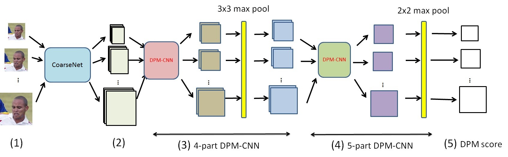
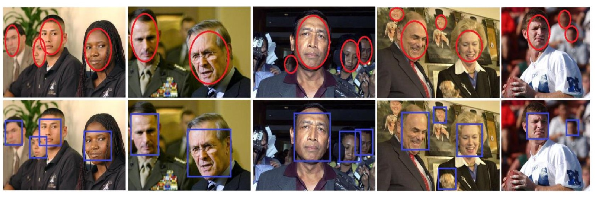
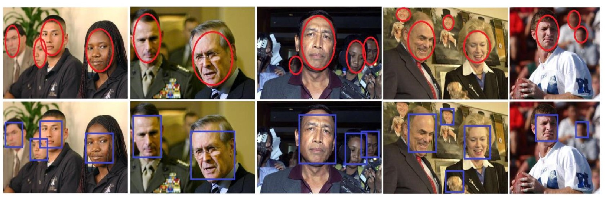

Adaptive WildNet Face Network for Detecting Face in the Wild
Dinh-Luan Nguyen, Vinh-Tiep Nguyen, Minh-Triet Tran, Atsuo Yoshitaka
Abstract
Combining Convolutional Neural Network and Deformable Part Models is a new trend in object detection area.
Following this trend, we propose Adaptive WildNet Face network using Deformable Part Models structure to exploit
advantages of two methods in face detection area. We evaluate the merit of our method on Face Detection Data Set and
Benchmark. Experimental results show that our method achieves up to 86.22% true positive images in 1000 false
positive images in FDDB. Our method becomes one of state-of-the-art methods in FDDB dataset and it opens a new way
to detect faces of images in the wild.
Bibtex
@inproceedings{Luan_ICMV,
author = {Nguyen, Dinh-Luan and Nguyen, Vinh-Tiep and Tran, Minh-Triet and Yoshitaka, Atsuo},
title = {Adaptive WildNet Face network for detecting face in the wild},
journal = {Proc. SPIE},
booktitle = {Eighth International Conference on Machine Vision (ICMV), 2015},
volume = {9875},
year = {2015},
doi = {10.1117/12.2229889},
}
Some figures:

Figure 1. WidNet Face network overview.
 Figure 2. Difficult images and annotation in FDDB dataset.
 Figure 2. Difficult images and annotation in FDDB dataset.
Loading ...